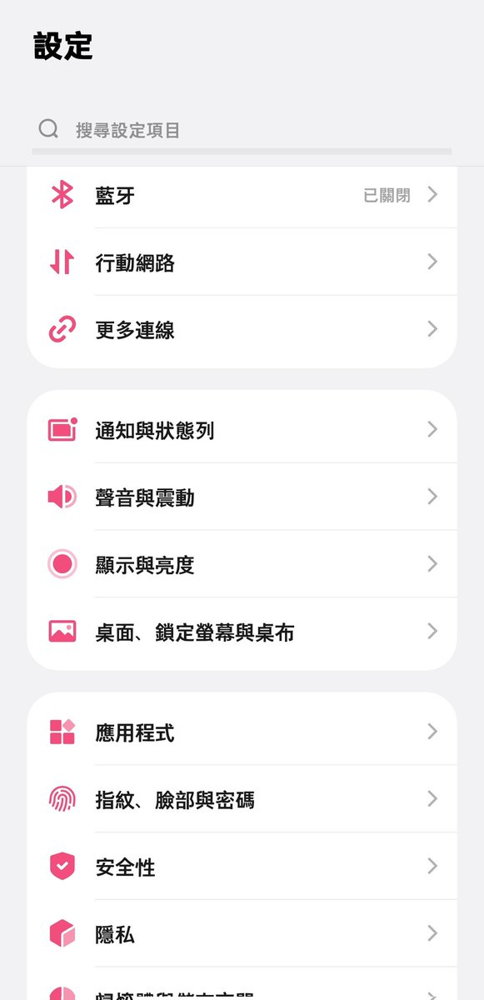
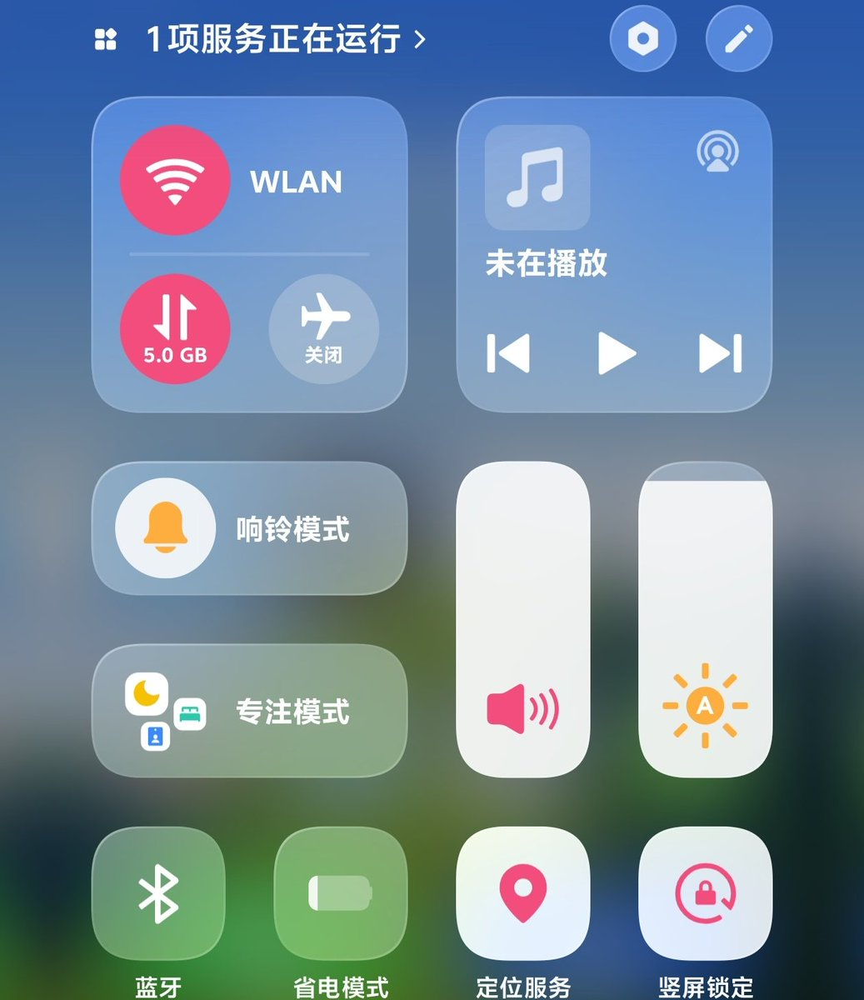
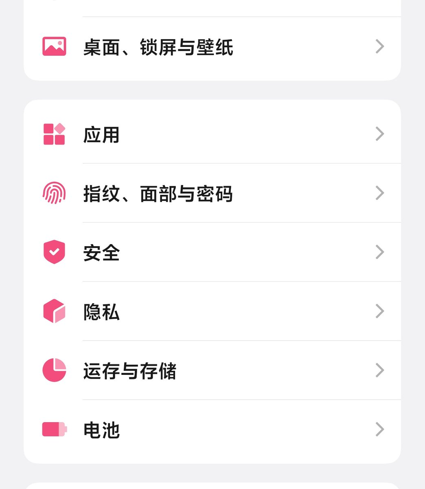

🧊沫柠好惨喵～🍋🍥
@Moningmeng
@sxshuishuimao 我的vivo也是粉色调！



lovely水水猫🍕
@sxshuishuimao
vivo就这点好，可以自定义颜色，小米好像是不行的
怎么办有点想要了
我木说要给我买个vivox300pro当备用机先用着
窝：我不用安卓的，备用机也不行
她就说那先给我好了，下次见面再给爸用
但是我现在有点喜欢了（） https://t.co/XV3YU5JuQj